← Powrót do strony JM-Rec · Wersja angielska
JM-Rec — krok po kroku
Przewodnik po JM-Rec na podstawie prawdziwych zrzutów ekranu. Liczby w nawiasach odsyłają do odpowiedniego obrazka; kolejność jest taka sama, jak w aplikacji.
1. Powitanie
(01) Ekran startowy
JM-Rec pamięta ostatnio używane organy. Na nowej sesji pyta, czy kontynuować z tymi organami, czy skonfigurować nowe.
- Kontynuuj z tymi organami — otwiera ekran główny dokładnie tam, gdzie został zostawiony: ten sam folder zapisu, te same rejestry, ten sam postęp.
- Skonfiguruj nowe organy — uruchamia dziesięciokrokowy kreator opisany niżej.
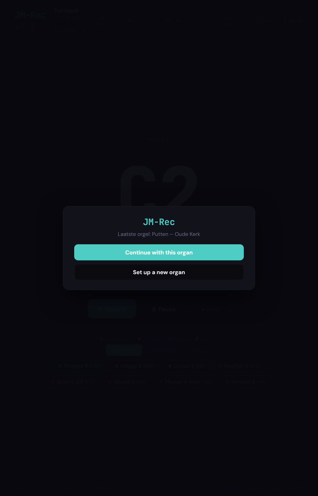
2. Kreator — dziesięć kroków
Dziesięć krótkich kroków ustawia całą strukturę: dokąd idą nagrania, który budowniczy i który kościół, jak wyglądają manualy i rejestry. Każdy krok można cofnąć strzałką w lewym dolnym rogu.
(02) Krok 1 — Lokalizacja zapisu
Folder, w którym są przechowywane wszystkie nagrania. Wybierz pusty folder na dysku z wystarczającą ilością miejsca — zestaw szybko sięga kilku gigabajtów. JM-Rec tworzy tam podfolder na każde organy, dzięki czemu możesz nagrywać wiele organów obok siebie.
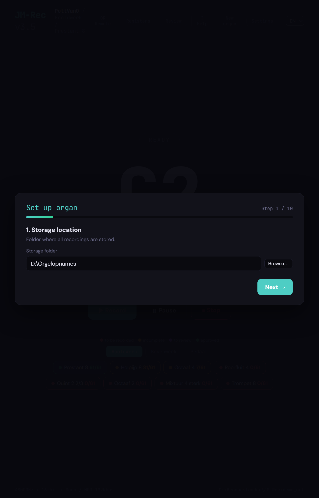
(03) Krok 2 — Budowniczy organów
Nazwa budowniczego organów (np. Van Vulpen, Flentrop, Reil). JM-Rec zapisuje to jako metadane w nagraniach, więc w JM-Orgue od razu widać, które organy grasz.
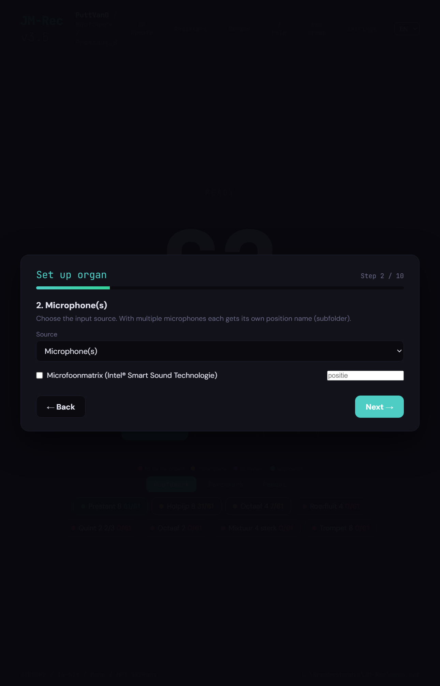
(04) Krok 3 — Miejscowość
Miejscowość, w której znajdują się organy (np. Putten). Razem z nazwą kościoła tworzy etykietę, pod którą organy pojawiają się w bibliotece.
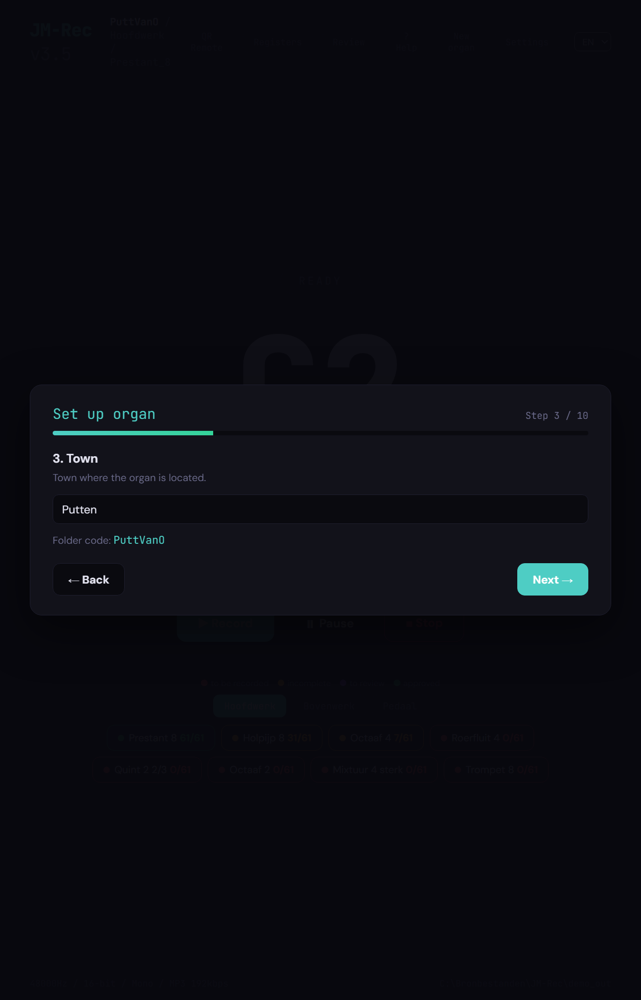
(05) Krok 4 — Nazwa kościoła
Nazwa budynku (Stary Kościół, Wielki Kościół, …). Zapisywana jako tekst informacyjny w nagraniach i widoczna na karcie organów w JM-Orgue.
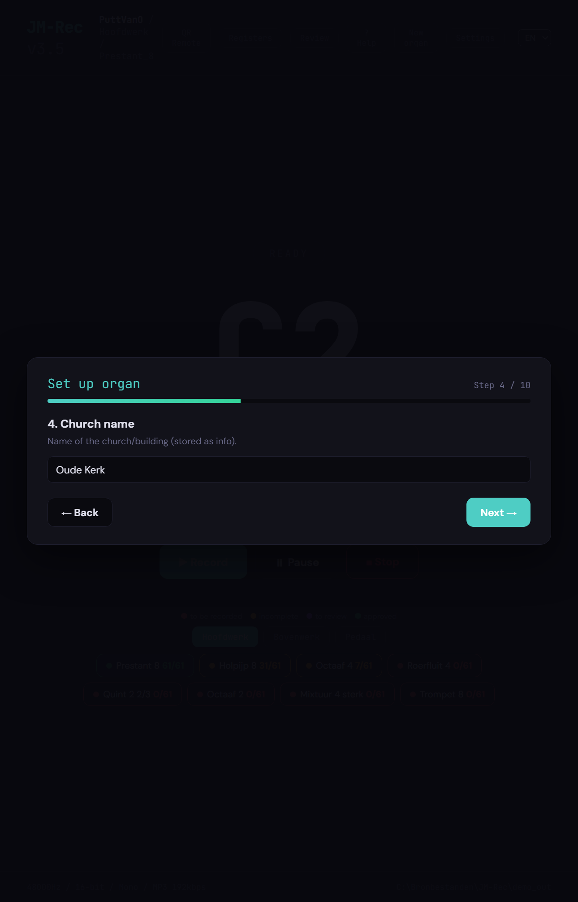
(06) Krok 5 — Rok budowy
Rok budowy organów, opcjonalny. Zostaw pole puste, jeśli jest nieznany.
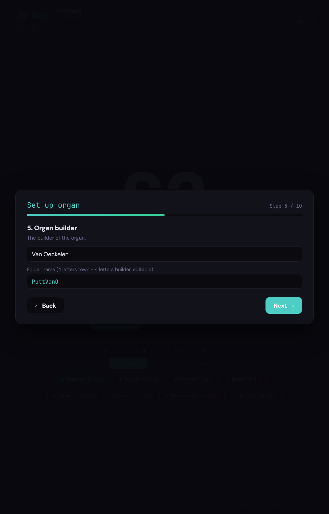
(07) Krok 6 — Ustawienia audio
Wybierz urządzenie nagrywające (mikrofon lub loopback „co słyszysz”), liczbę kanałów, częstotliwość próbkowania i głębię bitową. Domyślnie JM-Rec nagrywa mono 48 000 Hz / 16-bit jako MP3; to pasuje do większości organów piszczałkowych.
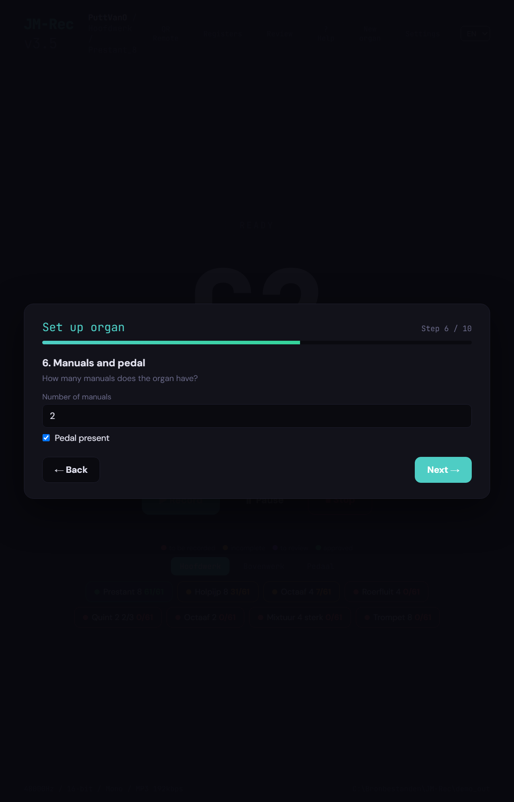
(08) Krok 7 — MIDI
Które urządzenie MIDI gra na organach? Wybierz wejście MIDI używane przez stół gry lub klawiaturę. Z loopbackiem „co słyszysz” na organach wirtualnych możesz wybrać też wirtualny port MIDI (loopMIDI); wtedy JM-Rec sam wysyła nuty.
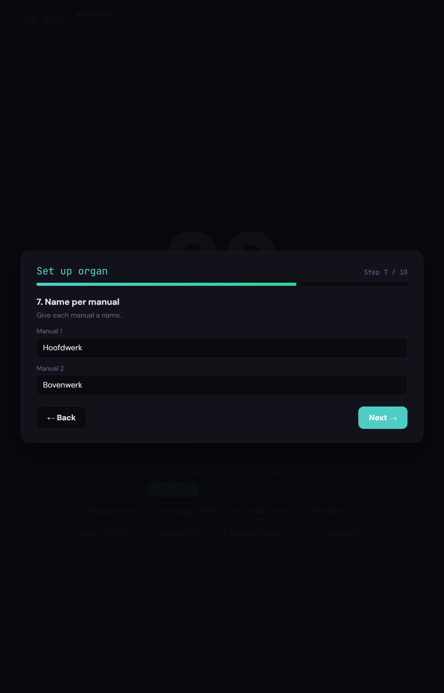
(09) Krok 8 — Klawiatury
Jakie klawiatury mają organy i jakiego kanału MIDI używa każda? Typowe dwumanualne organy mają Manuał Główny, Manuał II i Pedał. Każda klawiatura ma swój kanał, dzięki czemu JM-Rec kieruje nuty do właściwej klawiatury przy automatycznym przechodzeniu.
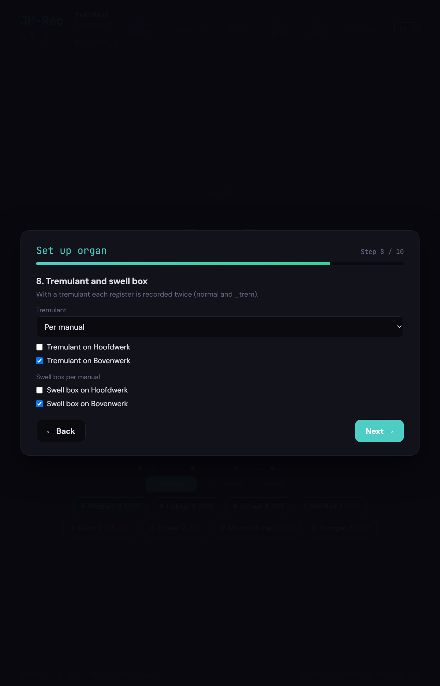
(10) Krok 9 — Rejestry na klawiaturę
Serce konfiguracji. Dla każdej klawiatury wymieniasz rejestry, wysokość (8′, 4′, 2′, mieszany „4 st”…) i zakres nut MIDI, w którym rejestr brzmi. Pomoc pamięciowa: duże C = MIDI 36. Dzielony rejestr bas/dyszkant (Trąbka 8 B/D) dostaje haczyk „Bass/disc”.
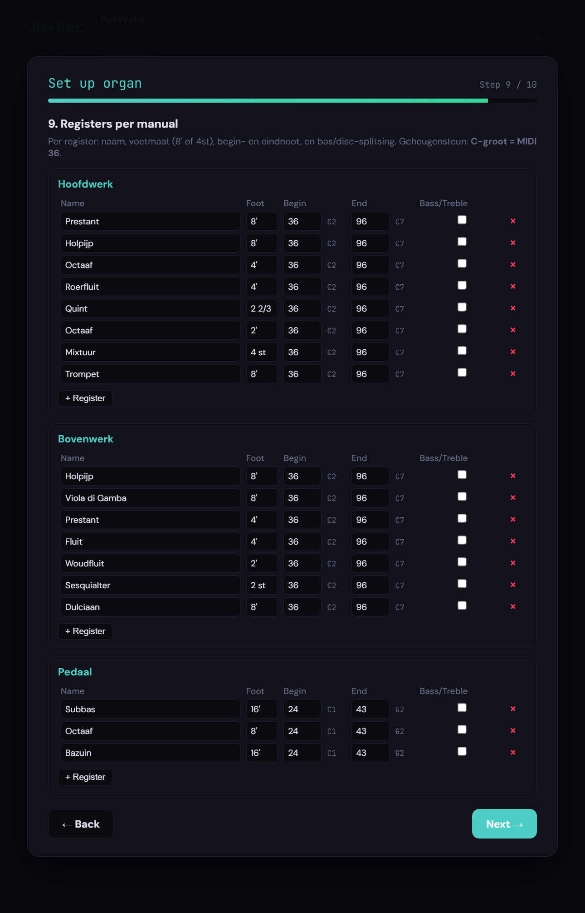
(11) Krok 10 — Podsumowanie
Ostatni krok pokazuje całość: liczbę klawiatur, rejestrów, nagrań do wykonania i spodziewane zużycie dysku. Jeśli obraz się zgadza, zakończ kreatora; jeśli chcesz coś poprawić, cofnij się przyciskiem Poprzednie.
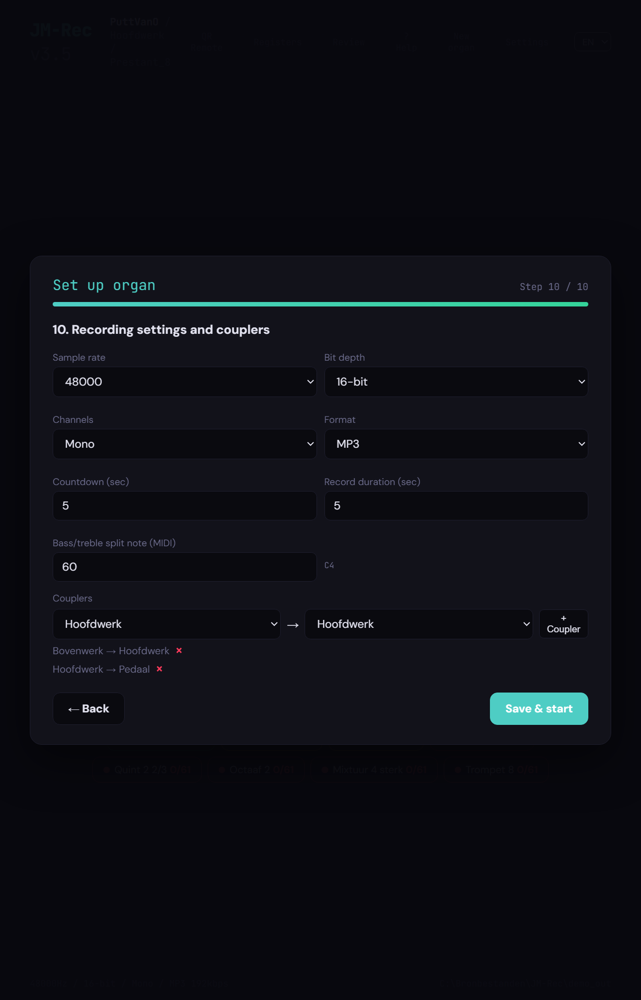
3. Nagrywanie
(12) Ekran główny
Po kreatorze lądujesz na ekranie głównym. Dużym drukiem jest nuta, która zaraz nadejdzie (C2), a pod nią nazwa pliku, pod którą nagranie zostanie zapisane (036-c.mp3). Trzy przyciski to:
- Nagraj — rozpoczyna nagranie i w konfiguracji „inteligentnej” automatycznie przechodzi do następnej nuty.
- Pauza — zatrzymuje się między dwiema nutami; przydatne, jeśli przechodzi zakłócenie.
- Stop — zamyka bieżące nagranie i wraca do „Gotowe”.
Na dole widzisz dla każdej klawiatury (Manuał Główny, Manuał II, Pedał) wszystkie rejestry z ich postępem. Legenda kolorów — do nagrania (czerwony), niekompletny (żółty), do sprawdzenia (fioletowy), zrobione (zielony) — mówi od razu, gdzie jesteś.

(13) Rejestr ukończony
Jak tylko ostatnia piszczałka rejestru jest w środku, pojawia się okno. Wybierasz:
- Sprawdź teraz — otwiera od razu ekran weryfikacji tego rejestru.
- Zatwierdzono — oznacza rejestr jako gotowy i przechodzi do następnego.
- Później — zostawia rejestr jako „do sprawdzenia”, żebyś odsłuchał go później.
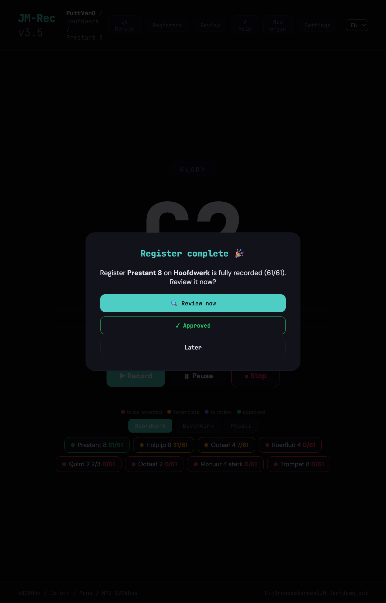
4. Sprawdzanie
(14) Ekran weryfikacji
Przyciskiem Kontrola u góry — lub oknem z kroku 13 — docierasz do ekranu weryfikacji. JM-Rec pokazuje dla każdej nuty, czy nagranie jest poprawne: cisza na początku, przester (clipping), zbyt krótkie wybrzmienie — każda nieprawidłowość oznaczona kolorem i symbolem. Ponowne nagranie pojedynczej nuty to jedno kliknięcie.
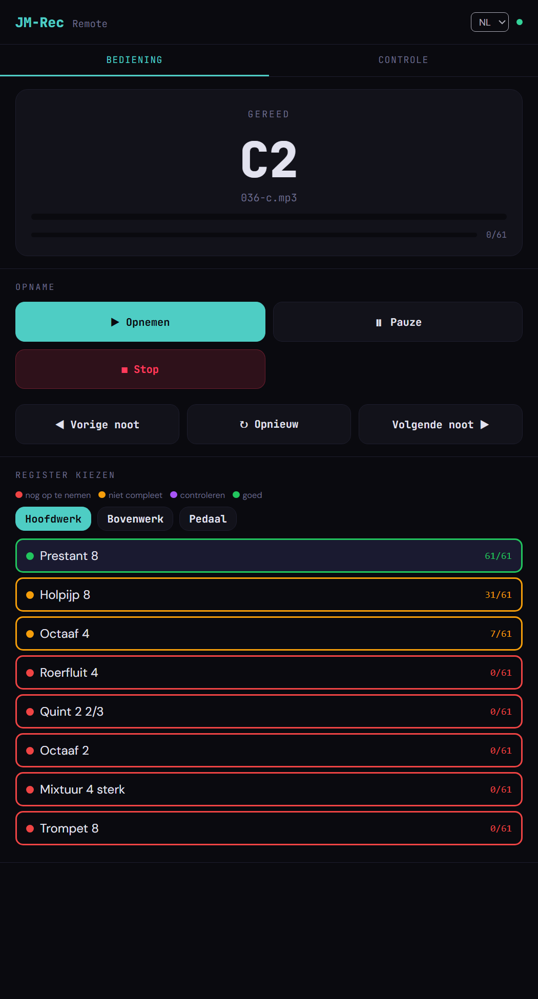
(15) Wykrywanie pętli
Dźwięk organów trwa długo; dla samplerów ustawia się „pętlę”, żeby dźwięk mógł trwać bez nieskończonego nagrania. JM-Rec proponuje dla każdej nuty jeden lub więcej punktów pętli, pokazuje je na kształcie fali i odtwarza na żądanie. Jedno kliknięcie potwierdza propozycję albo wybiera inne miejsce.
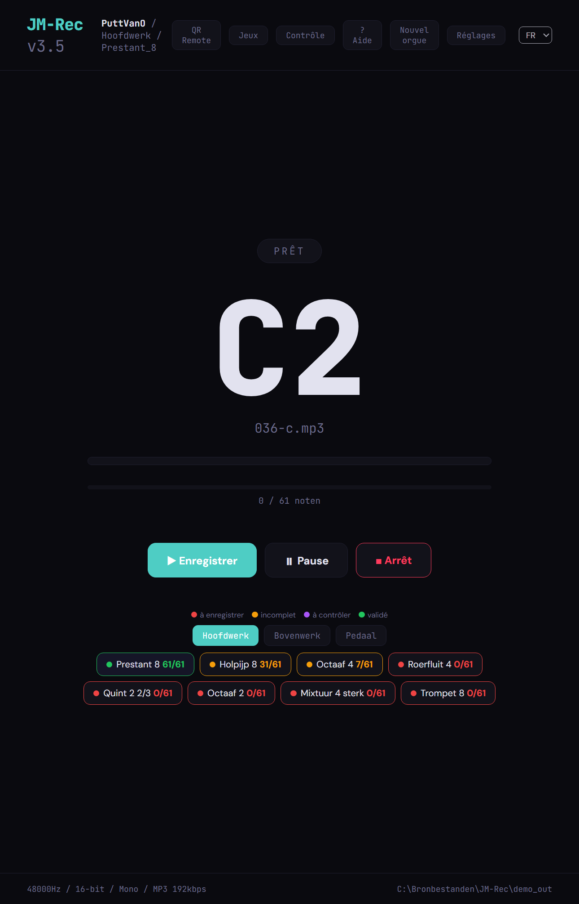
5. Pilot
(16) QR Remote
Przyciskiem QR Remote JM-Rec pokazuje kod QR z adresem sieciowym (np. http://192.168.1.10:5570). Zeskanuj go telefonem lub tabletem i pilot otworzy się w przeglądarce. Sterujesz Nagraj, Pauza i Stop oraz widzisz bieżącą nutę ze stołka — bez aplikacji do zainstalowania.
Brak wifi? Włącz Mobilny hotspot Windows (przycisk Otwórz ustawienia hotspotu na dole), połącz telefon z tą siecią i wybierz tutaj sieć hotspotu z listy rozwijanej.
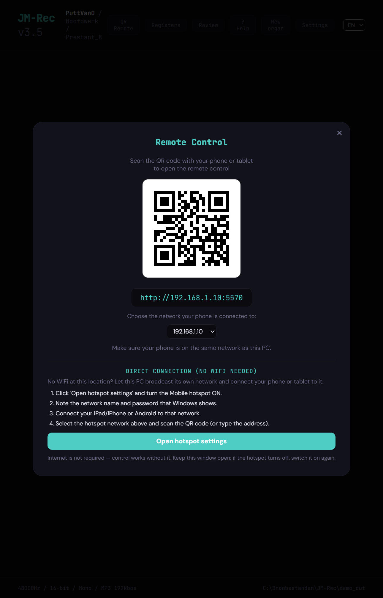
6. Wynik w JM-Orgue
Otwieranie nagrań
Gdy nagrania są gotowe, uruchom JM-Orgue, otwórz bibliotekę i kliknij Open organ…. Wskaż folder zapisu wybrany w kroku 1 JM-Rec i organy pojawią się w bibliotece ze wszystkimi klawiaturami, rejestrami i kopulami ustawionymi w kreatorze. Od tej chwili grają jak każdy inny zestaw sampli.